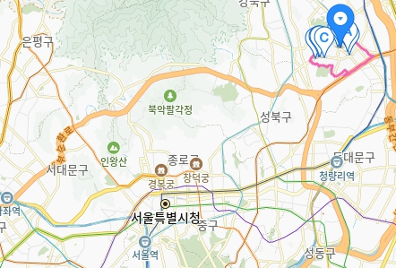
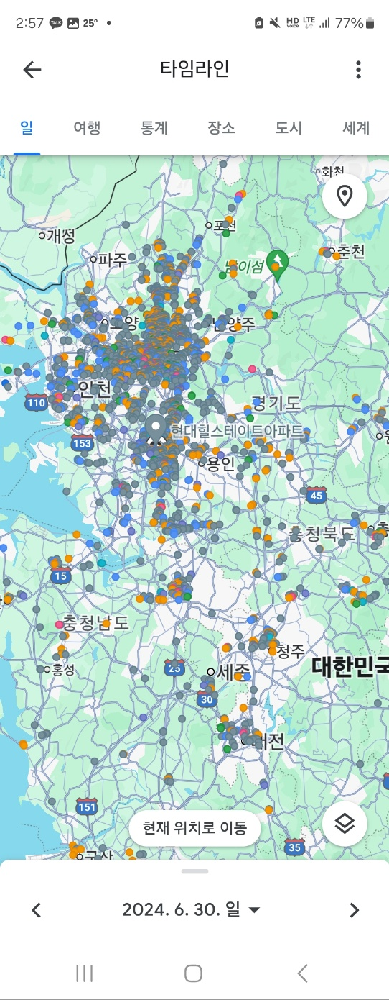
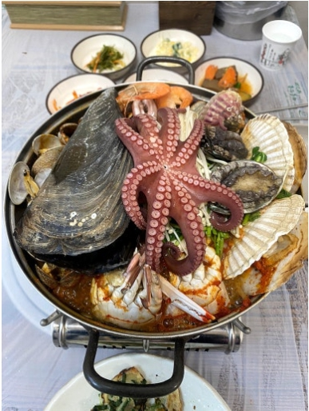

| 사는곳 | 나이 | 사는곳 | mbti |
|---|---|---|---|
| 최재환 | 43세 | 매탄동 | INFP |
안녕하세요 제 이름은 최재환입니다.
저는 개발자의 꿈을 갖고 휴먼센터에서 언어를 공부중입니다
프로그램 언어라는 생소한 공부를 시작해 잘할수 있을지 걱정이 앞서지만
새로운 미래에 대한 기대가 높습니다
항상 열심히 꾸준하게 임하겠습니다
저는 서울의 장위동이라는곳에서 태어났고 유치원, 초등학교, 중학교, 고등학교
대학교를 다녔습니다. 현재는 수원 매탄동에 거주중입니다
장위동의 위치
장위동이라는곳을 모르는분들을 위해 대략적인 위치를 찾아봤습니다
서울의 북쪽에 그다지 유명한게 얼마 없는 조용한 동네였습니다.
저는 35년간 장위동에서 살다 재개발 이슈로 이사를 오게되었습니다.
해외는 일과 관광으로 중국에 몇번 다녀온게 전부입니다.
국내는 2016년 부터 일하게 된 차량 탁송업무로 전국에 안가본곳 없이
많이 다녔습니다.
따로 특별히 기억나는곳은 없지만 추억을 생각하다보니
2021년 겨울 군산에서 인천 송도를 올라왔던 기억이 납니다
그날 폭설이 내렸는데 총 운행시간이 11시간이 걸렸습니다.
서해대교를 넘어오는데 사고만 20회 이상 본거 같습니다.
재미있던 기억도 많은데 왜 이게 떠오르는지 모르겠지만
그날의 기억은 아마 잊지 못할겁니다.
해물과 고기를 좋아합니다.
그중에 해물을 진짜 좋아하는데 얼큰한 국물의 해물탕과 찜은
최애 음식입니다
취미라 부를건 따로 없지만 사람 만나는걸 좋아해 술자리와
모임을 자주 나가는 편입니다.
이상으로 자기소개를 마치겠습니다.
읽어주셔서 감사합니다.